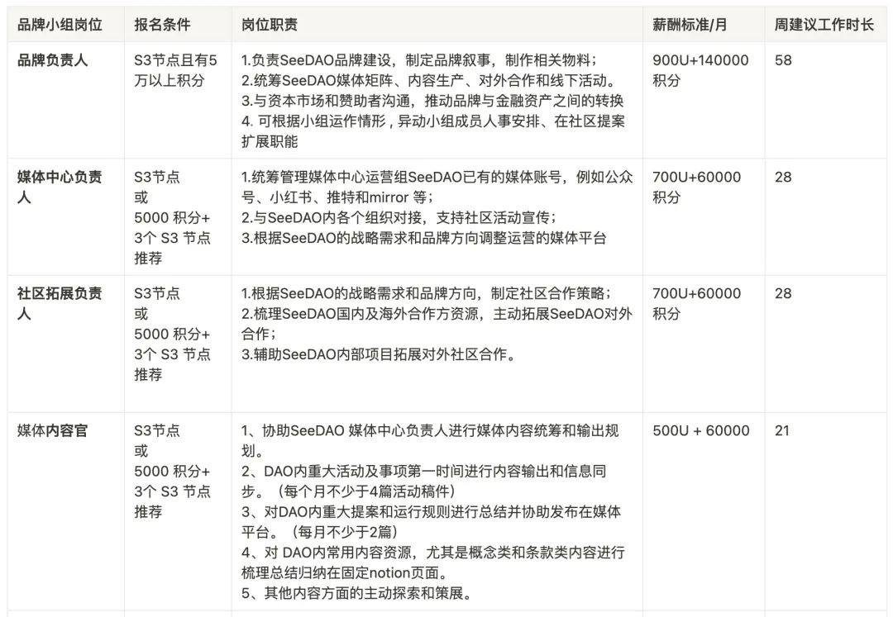

SeeDAO 市政厅是负责内部治理、对外品牌以及技术运营的综合性公共服务机构。第三届市政厅由第二届节点共识大会选举产生，分别在内部治理、对外品牌、技术支持等数 8 个公共服务岗位担任公共事务的工作，在经过了 3 个月的协作后，这 8 位 SeeDAO 小伙伴也即将卸任。
即将到来的第三届节点共识大会（09.01 ~ 09.03）将会产生新一届的 SeeDAO 节点和相应岗位的市政厅成员，也会持续为大家提供优质、贴心的公共服务。
本次市政厅公共岗位竞选报名将于 2023 年 8 月 25 日 开始，在 8 月 30 日 中午 12 点 截止，请符合条件且感兴趣的伙伴们及时点击链接报名市政厅的公共岗位喔！
🔗 链接：https://tally.so/r/n0Bo7Q
结合前三季度市政厅的运转和协作经验，本届市政厅的岗位进一步调整，职责更为清晰，具体 8 个岗位包括：
• 内部治理小组：负责人、治理工程师、财务官
• 对外品牌小组：负责人、媒体中心负责人、社区拓展负责人、媒体内容官
• 技术小组：负责人
↓
🟣内部治理小组岗位说明
本届市政厅的治理小组各岗位职责更为明确，期望在内部治理中看到更多社区成员的“自涌现”，迸发出 SeeDAO 强大的凝聚力和创新力。
👆🏻点击查看大图
本季度的对外品牌小组从往届的单独个人变成个人+小组制度，“媒体中心负责人”和“社区拓展负责人”均有权在职责范围内招募其“媒体运营小组”和“社区拓展小组”成员：

🟣 媒体运营小组”和“社区拓展小组” 的职责与报名条件
本届市政厅公共岗位竞选结束后（9 月 3 日），对“媒体运营小组”和“社区拓展小组”感兴趣的 SeeDAO 伙伴均可联系对应岗位的负责人，然后申请加入其小组。
先填写表单，无需公开宣讲
🟣 技术小组岗位说明
本届技术小组负责人 1 个，该负责人同时负责统筹技术顾问小组相关事项：
👆🏻点击查看大图
🕰 竞选流程：
报名开始：8月25日~8月30日
公共岗位 AMA：8月26日晚上 9:00 进行会议
报名截至：8月30日中午 12:00
竞选演讲：
/ 内部治理小组：8月29日晚19~21点
/ 对外品牌小组+技术小组竞选演讲：8月30日晚 20~22 点
选举投票：8月30日晚22点 ~ 9月03日晚24点，共 4 天
选举结果公布：9月04日
//
https://tally.so/r/n0Bo7Q
>>>>>
【第四届节点共识大会预告】
第三届节点共识大会开幕在即，后续会陆续更新第三季节点资格名单、节点 claim 方法、市政厅工作评估投票、本季度提案公示&投票等重大社区事务，敬请大家持续关注。
—
审核 | Ines